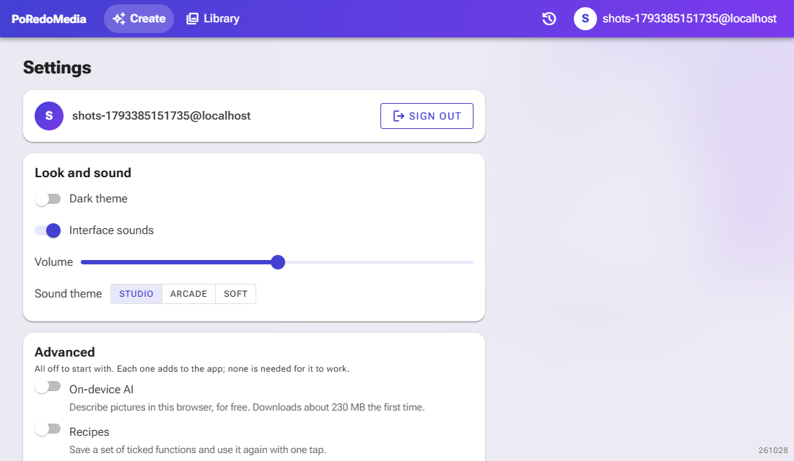
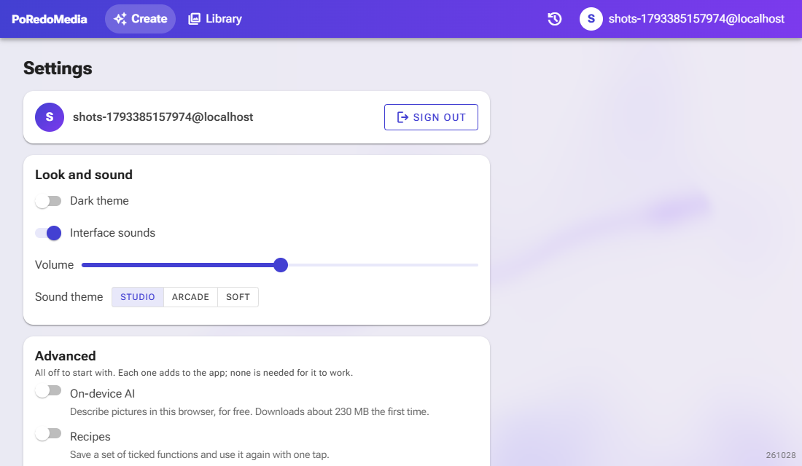
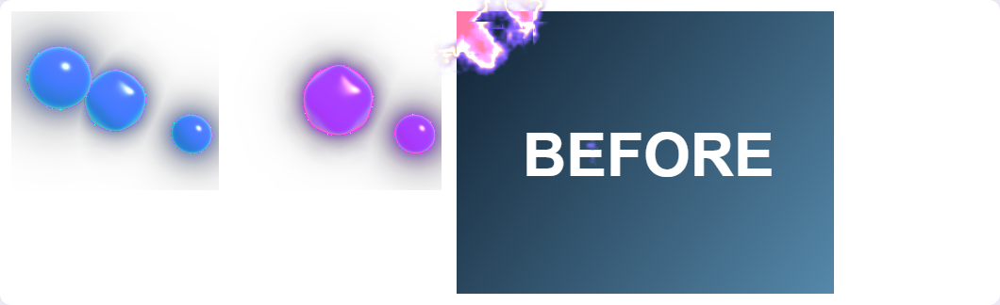

Effects and sound themes (items 11–20)
Captured headless with Playwright at 1100×640 on 2026-10-30, Development environment, a fresh dev user, with Visual effects and Interface sounds switched on. "Before" runs without a WebGPU adapter, which is exactly the old look (the glass backdrop) and is still what browsers without WebGPU get; the Sound theme row was taken out of that page so the rest is identical. "After" runs with Chromium's software WebGPU adapter (SwiftShader). Sounds, haptics, the download burst, the waveform and the card tilt do not show in a still picture.
12 · 20Settings: the fluid backdrop and the sound theme picker
Behind the page, the WebGPU fluid takes the glass gradient's place: dye drifts on a curl-noise flow and the pointer stirs it (the streak on the right is where the pointer swept). Under Volume, a new Sound theme row picks Studio (the original sounds, the default), Arcade or Soft; picking one plays the run-finished chime in it.


18 · 13Run orb stages and the shader reveal
Left: the run orb while the AI looks at the picture (cool cyan) and while it draws (magenta); it is amber while it writes, and returns to the brand colours when the run finishes. Right: a result being revealed, caught early: the new picture burns in from the top left behind a glowing, heat-hazed edge. It used to fly in as pixel particles, which is still the fallback without WebGL2.
